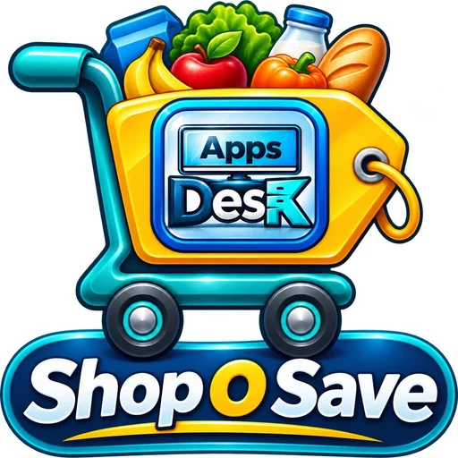

Build your basket. Compare what you can verify. Save more.
Testing version: prices are entered manually until verified supermarket feeds are connected. No live prices are claimed.
Your shopping list
Compare supermarkets
Saved price research
Database research records, not a live retailer search. Missing or mismatched packs need checking.
Historical research only, not a live supermarket refresh. Check item sizes and dates before buying.
Enter verified shelf prices in pounds. Blank means unverified (—). Cheapest prices are highlighted for each item.
| Product | Tesco | Asda | Morrisons | Sainsbury's | Aldi | Lidl |
|---|
Shopping lists & savings
Compare a split shop against buying everything from one supermarket. Results use only available entered prices, including historical prices, and are estimates until the full basket is verified.
Save and restore
Saved locally on this device for now; clearing browser storage removes it.
Supabase connection
Not checked
This checks service availability only, not shopping database tables.